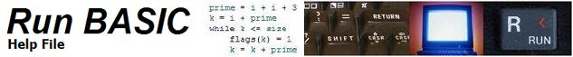

Run BASIC Free Edition v1.0.1 - Build 2.44
Copyright 2008 Shoptalk Systems
What is Run BASIC?
What's special about Run BASIC?
Differences from desktop programming tools
Session Timeouts and Runtime Timeouts
The HTML Statement
Graphics
Files
HTTP Communication Features
Statements and Functions
Getting started guide for BASIC programmers
Run BASIC is a special programming language just for web programming. It lets you create programs that run in a web page but without the complexity and restrictions of other web programming approaches. With Run BASIC you can create interactive applications without gateway programming (CGI), Perl or PHP, sessions, cookies, and state management, etc. Run BASIC includes a web server so you do not need to install and configure a standalone web server like Apache.
This free edition of Run BASIC includes everything you need to experiment with web programming and is even suitable for creating software you can use on your own computer in a web browser. If you decide that you want to publish your applications so that they can be used by others on a home or office network, or over the Internet you can upgrade to a server edition of Run BASIC. Run BASIC is available for Windows, Mac OS X and Linux. Visit http://www.runbasic.com for more information about this.
Run BASIC uses a new version of the Liberty BASIC compiler and runtime support. The syntax is based on Liberty BASIC, but some of the commands are different because of the web programming nature of Run BASIC.
Run BASIC also includes very simple database support and includes a free copy of SQLite which is a popular SQL database engine in the public domain. SQL results are returned as an object which can be rendered into a web page with flexibility.
Run BASIC also has easy to use Cascading Style Sheet integration. You can create your web page without styling it and later once you get it working it is a rather simple matter to pretty it up by adding some CSS rules.
What's special about Run BASIC?
Run BASIC lets you create programs that run in a web browser. You don't need to learn any of the popular (and complicated) web technologies to make this work. If you are familiar with the BASIC programming language you can create web programs quickly and easily. Run BASIC isn't an add-on module for another web server like Apache. Instead it includes a web server and integrate an easy to use web BASIC programming system.
Other popular web programming systems require that the programmer do lots of work to manage user sessions and pass state around from one web page to another. This sort of effort is taken care of for you automatically by Run BASIC so you can concentrate on writing code that you care about.
Differences from desktop programming tools
Run BASIC doesn't do windows (this is not referring to Microsoft Windows). It is a BASIC for programming in a web browser. Your programs appear as part of a web page; an interactive web page.
Run BASIC works on popular web browsers for Windows, Linux and Mac OS X. What about PDAs and smartphones? At this time we don't officially support these because there are so many different kinds, but try yours. It may work!
At this time, the standard style of programming for Run BASIC is the classic BASIC procedural style. Using PRINT and INPUT to interact with the user is the tried and tested way, and we also add an HTML statement which works just like a PRINT statement but which allows you to embed HTML in your output to do some fancy things.
Here is a very short program that would work just as well in a Microsoft BASIC or Run BASIC:
input "Enter first number to add"; firstNum
input "Enter second number to add"; secondNum
print firstNum;"+";secondNum;"=";firstNum+secondNum
end
The ability to add text fields and editors, checkboxes, lists, and other similar GUI things is not supported in this initial release of Run BASIC. This will come in the near future.
What about games and animation? There are plans to support some sort of Ajax-style graphical animation and it may become possible to create some simple games, but the web browser is not best place to create smoothly animated games. Liberty BASIC is much better suited to this sort of thing. See http://www.libertybasic.com
Session Timeouts and Runtime Timeouts
Since Run BASIC is hosted on a web server it is important to specify how long a connected browser can keep its session alive from the last time it interacted with the server. By default this is one hour (3600 seconds) and it affects both the development IDE and any application being served. You can adjust this from the Preferences tab when you log in from the web interface.
Similarly there is a limit on the length of time that any web app is allowed to run continuously (in between user submits and clicks). By default this is 60 seconds but it can also be adjusted from the Preferences tab.
Run BASIC has a special variant of PRINT but it's called HTML. The reason for this is because when you PRINT something you expect it to be displayed as straight text. So if we simply output the text straight into the web page then characters like < and & will cause problems for the output. So, we designed the PRINT statement to properly display text without surprises. If you want to put HTML tags or Javascript into the page use the HTML statement. Here's an example:
print "<b>This will not be bold</b>"
html "<b>This will be bold</b>"
When you run this you will see:
<b>This will not be bold.</b>
This will be bold.
Another point to remember is that unlike the PRINT statement, the HTML statement does not permit the use of a trailing semicolon to suppress new line. The reason for this is that Run BASIC assumes when you're using HTML that you want explicit control over output. If you want a new line, just put in a <br> tag like so:
html "Insert a new line here.<br>"
Run BASIC has an easy graphics system (see Graphics Overview for even more information). You can draw graphics and then just insert them into a page using the RENDER statement.
Here is a simple example:
graphic #counting, 100, 100
#counting size(5)
for x = 1 to 10
#counting set(x*10, x*x)
next x
render #counting
end
This program draws 10 small 5 pixel large black boxes on a curve. You can render more than one graphic in your program's output. For example if I move the RENDER statement inside the loop as below there will be 10 different graphic images displayed on the web page.
graphic #counting, 100, 100
#counting size(5)
for x = 1 to 10
#counting set(x*10, x*x)
print "graphic "; x
render #counting
next x
end
Notice to Liberty BASIC programmers: Graphics commands in Run BASIC use the same syntax as Liberty BASIC v5.0 (still in development). Instead of these formats:
print #handle, "command param1 param2"
Or:
#handle "command param1 param2"
There is this new syntax:
#handle command(param1, param2)
The Run BASIC Personal server supports sequential and random access files using the OPEN, CLOSE, FIELD, GET, PUT, KILL, INPUT$(), LOF(), EOF(), MKDIR() and RMDIR(). It also supports binary access.
Run BASIC includes functions for making HTTP GET and POST requests called httpget$() and httppost$(). These return the response of the server they are called against. These can be used along with Run BASIC's built-in XML parser to get information from other web servers.
Also included is an HTTP Request object which allows you to access the named properties from the last HTTP POST into your Run BASIC program. This is an advanced feature that comes in handy when you want to integrate Javascript into your Run BASIC programs. Unlike most other web programming systems you will not usually need to use this feature.
The following reference index is not meant to be a tutorial. BASIC programmers will be familiar with most of the material below. If you want to learn the essentials of Run BASIC programming check out the tutorial.
Keywords for statements and functions below are in uppercase, but they do not need to be uppercase when coding.
Statements
BUTTON #handle, label$, handler - Add a submit button to the page
with #handle, label$ and handler
CALL subname[, param1[, param2...]] - Invoke subname with one or more
parameters
CASE expr1[,expr2...]|ELSE - Execute the
code that follows if one or more expressions match the SELECT expression (See
SELECT CASE). Optionally the keyword ELSE can be used for cases without a
matching expression.
CHECKBOX #handle, labelExpr$, setting - Add a checkbox to the web page using
#handle, labelExpr$ and setting
CLOSE #handle - Close the file or object #handle
CLS- Clear the output area of the web page
CSSCLASS tagExpr$, ruleExpr$ - Define a CSS class rule with tagExpr$ and
ruleExpr$
CSSID #tag, ruleExpr$ - Define a CSS id rule with #tag and ruleExpr$
DATA item1[,item2...] - Define data items for the program
DIM name(size1[, size2...]) - Dimension an array of one or more dimensions of
size
DIV tag - Begin an HTML div specifying with tag
END - End execution of program
EXIT FOR - Quit executing code in the current FOR/NEXT loop and continue with
the code following
EXPIRE [urlExpr$] - Expire the current program and session. Optionally
redirect to urlExpr$.
FIELD #handle, length1 as var1[, length2 as var2...] - Define fields for a
random access file #handle
FILES #handle, pathStringExpr$ - Create a file accessor object for accessing
files at pathStringExpr$
FOR/NEXT - Loop while counting from a to b with optional
counting step of c
FUNCTION fn([param1[, param2...]]) - Define a function named fn with optional
parameters
GET #handle, recNum - Read record recNum from open random access file #handle
GETTRIM #handle, recNum - Same as GET but strips leading and trailing spaces
from field data
GLOBAL var1[,var2...] - Define one or more variables to be globally visible.
GOSUB label - Transfer control to the code immediately after label (See
RETURN)
GOTO label - Transfer control to the code immediately after label
GRAPHIC #handle, width, height - Create a graphic object named #handle of width
and height
HEAD expr$ - Escape expr$ into the page's
HEAD section
HTML expr$ - Escape expr$ into the page so that HTML tags are not
rendered as plain text
IF/THEN/ELSE/END IF- Control program flow
based on conditional tests
IMAGEBUTTON #handle, urlPath$, handler - Add an image button to the page using
handle, urlPath$, and handler
INPUT [[#handle,]|[expr$;]]var1[,var2...] -
Get one or more values from the user or from a file.
Optionally display expr$ as a prompt.
KILL filepath$ - Delete the file specified by filepath$
LINE INPUT [[#handle,]|[expr$;]]var1[,var2...]
- Get a complete line of text from the user or a file, including commas.
LINK #handle, labelExpr$, handler - Add a link to the web page with
#handle, labelExpr$, and handler
LISTBOX #handle, arrayName$() - Add a listbox to the web page with #handle and
filled with the contents of arrayName$()
LOADIMAGE nameExpr$, path$ - Load an
image file from path$ naming it nameExpr$.
LOADGRAPHIC #handle, path$ - Load an image file from path$ and make a
graphic object #handle
ON ERROR GOTO [errorHandler] - Specify an error handler label. The handler
must be in the outermost scope. No support for RESUME.
OPEN expr$ FOR mode AS #handle - Open a file #handle using
expr$ and mode
PASSWORDBOX #handle, expr[, cols] - Add a password box to the web page with #handle and
filled with the result of expr (string or numeric). Optionally
specify the width of the control using cols.
PRINT expr[;] - Put text represented by expr into the display output. An optional semicolon
suppresses end of line.
PRINT #handle, expr[;] - Send data
represented by expr to the file at #handle
PUT #handle, recNum - Write record recNum into open random access file #handle
RADIOGROUP #handle, choicesExpr$, choice$ - Insert radiobuttons defined by
comma delimited choicesExpr$ with selection choice$
RAW expr$ - Stop execution and return the contents of expr$ as the entire web
page with a MIME type of text/plain
READ var1[,var2...] - Get information from DATA statements and place into 1 or
more vars
RENDER #handle - Insert the object referred to by #handle into the web page
RESTORE - Reset the DATA pointer back to the beginning
RETURN - Resume execution after the last GOSUB statement
RUN programNameExpr$[, #handle] - Run the specified program synchronously and
optionally assign it as an object to #handle
SELECT CASE expr - Begin a select block using expr
SMTPSENDER #handle, mailServer$ - Create an SMTPSENDER object with #handle and
mailServer$ address
SQLITECONNECT #handle, environmentExpr$ - Create a SQLITE connection object for
environmentExpr$ and assign to #handle
SUB subName[, param1[, param2...]] - Define a subroutine subName with optional
parameters
TABLE #handle, arrayName$() - Create a table object from the specified array and
assigning it to #handle
TEXTAREA #handle, expr[, cols, rows] - Add a textarea to the web page with #handle and filled
with the result of expr (string or numeric). Optionally specify the width
and height using cols and rows.
TEXTBOX #handle, expr[, cols] - Add a textbox to the web page with #handle and filled
with the result of expr (string or numeric). Optionally specify the width of the
control using cols.
TITLEBAR stringExpr$ - Change the browser's title to stringExpr$
UPLOAD promptExpr$; path$ - Insert an upload widget into the display output. The
uploaded file's name is in path$.
WAIT - Stop and wait for an event.
WHILE/WEND - Loop if and as long as an expression evaluates to
true (non zero).
XMLPARSER #handle, docExpr$ - Create an XML parser object on docExpr$.
ABS(x) - Absolute value of x
ACS(x) - Arccosine of x
ASC(a$) - ASCII value of first character of string a$
ASN(x) - Arcsine of (x)
ATN(x) - Arctangent of (x)
CHR$(x) - String containing character of ASCII value x
COS(x) - Cosine of x
DATE$([v]) - String or number representing a date with optional modifier v
DECHEX$(x) - Hexadecimal string for decimal value of x
EOF(#handle) - Return 1 if open file #handle is at end, else return 0
EXP(x) - Return e^x. e=2.7182818
HEXDEC(h$) - Decimal number from hexadecimal string
HTTPGET$(url$) - Perform an HTTP GET to url$.
Return the result
HTTPPOST$(url$, data$) - Perform
an HTTP POST to url$ with data$. Return the result
INPUT$(#handle, n) - Next n characters from open file #handle
INPUTTO$(#handle, delim$) - Next characters
up to delim$ from open file #handle
INSTR(a$, b$ [,i]) - Index of b$ in a$ with optional starting index i
INT(x) - Integer part of x
LEFT$(a$, i) - First i characters of a$
LEN(a$) - Count of characters in a$
LOF(#handle) - Number of characters/bytes for open file #handle
LOG(x) - Natural logarithm of x
LOWER$(a$) - a$ converted to lowercase
MAX(x, y) - The larger of x or y
MID$(a$, x [, y]) - Contents of a$ starting at x, with optional length y
MIN(x, y) - The lesser of x or y
MKDIR(p$) - Create directory path p$. Return 1 or 0 for failure or success
respectively.
RIGHT$(a$, i) - Last i character from string a$
RMDIR(p$) - Delete directory path p$. Return 1 or 0 for failure or success
respectively.
RND(n) - Return a pseudorandom value between 0 and 1
SHELL$(command$) - Run the contents of
command$ in a command line shell, return the output as a string.
SIN(x) - Sine of x
SPACE$(i) - A string containing i space characters
SQR(x) - Square root of x
STR$(x) - String representation of number x
TAN(x) - Tangent of x
TIME$([v]) - Number or string representing time with optional modifier v
TRIM$(a$) - a$ without leading or trailing spaces
UPPER$(a$) - a$ converted to uppercase
USING(f$, x) - Formatted string of x using f$ as a template, for example
"####.##"
VAL(a$) - a$ converted to a numeric value
WORD$(a$, n[, d$]) - nth word from a$ using whitespace as delimiter, with
optional delimiter d$
See the Graphics Overview for a walkthrough of graphics in Run BASIC.
There are various methods that you can call against a graphics object to perform drawing operations. Turtle graphics operations are supported.
#handle BOX(x, y) - Draw a box from the current position to x,
y.
#handle CIRCLE(r) - Draw a circle of radius r at the current position.
#handle CLS(["color"] | [r, g, b]) - Clear the graphics area to white, or to
named color, or to an RBG color.
#handle COLOR("color" | [r, g, b]) - Set the drawing color to a named color, or
to an RGB color.
#handle DISCARD() - Discard all the drawing operations in the currently open
segment.
#handle DOWN() - Set the drawing pen to down (this is the default).
#handle DRAWIMAGE("name", x, y) - Draw the image named "name" at x, y.
#handle FILL("color" | [r, g, b]) - Like CLS() but it doesn't actually forget
previously drawn graphics
#handle FLUSH(["name"]) - Finish the current drawing segment (and optionally
name it "name") and make another segment.
#handle FONT("fontname", pointSize [,"bold"][, "italic"]) - Specify a font by
name and size to use for drawing text. Italic and bold are optional.
#handle GO(d) - Make the turtle go distance d.
#handle DEBUG$() - Return the string "Graphic".
#handle HEIGHT() - Return the height in pixels of the graphic object.
#handle HOME() - Place the pen in the center of the graphic area.
#handle LINE(originX, originY, destX, destY) - Draw a line from originX, originY
to destX, destY.
#handle NORTH() - Tell the turtle to point to the top of the graphic object.
#handle PLACE(x, y) - Set the position to be x, y.
#handle REDRAW() - Redraw all the existing drawing segments.
#handle SET(x, y) - Draw a point of the currently set size at x, y.
#handle SIZE(s) - Set the size of the drawing pen to s pixels.
#handle STRINGWIDTH(str$) - Return the width in pixels of str$ using the current
font.
#handle TURN(a) - Turn the turtle a degrees to the right. a can be
negative to turn to the left.
#handle UP() - Set the drawing pen to up (don't draw).
#handle WIDTH() - Return the width in pixels of the graphic object.
#handle X() - Return the current position x.
#handle Y() - Return the current position y.
To draw text at the current position use this form:
#handle "\this text will show up\each backslash makes a new line"
To draw text when you need to display backslashes:
#handle "|you can show \ backslashes"
Segment related graphics commands
#handle DELSEGMENT(n| "name") - Delete the segment
numbered n or named "name"
#handle DISCARD() - Forget all drawing operations in the current segment
#handle FLUSH(["name"]) - Make a new segment from drawing items since the last
segment was made, optionally name the segment "name"
#handle REDRAW(["name"]) - Redraw all the drawing segments. Optionally
redraw just one named segment.
#handle SEGMENT() - Return the current segment ID
#handle CONTENTS$() - Return the contents of the textbox as a
string
#handle VALUE() - Return the contents of the textbox as a number
#handle TEXT(expr$) - Set the contents of the textbox
#handle PRINT(expr$) - Append expr$ to the contents of the textbox
#handle SETFOCUS() - Set the input focus to this control when the page is
displayed
#handle SETID(expr$) - Set the HTML id property to be the value of expr$
#handle ISNULL() - Returns zero (or false)
#handle DEBUG$() - Returns the string "Textbox"
#handle CONTENTS$() - Return the contents of the textarea as a
string
#handle VALUE() - Return the contents of the textarea as a number
#handle TEXT(expr$) - Set the contents of the textbox
#handle PRINT(expr$) - Append expr$ to the contents of the textarea
#handle PRINTLN(expr$) - Append expr$ and and CR to the contents of the textarea
#handle SETFOCUS() - Set the input focus to this control when the page is
displayed
#handle SETID(expr$) - Set the HTML id property to be the value of expr$
#handle ISNULL() - Returns zero (or false)
#handle DEBUG$() - Returns the string "Textarea"
#handle CONTENTS$() - Return the contents of the passwordbox
as a string
#handle VALUE() - Return the contents of the passwordbox as a number
#handle SETFOCUS() - Set the input focus to this control when the page is
displayed
#handle SETID(expr$) - Set the HTML id property to be the value of expr$
#handle ISNULL() - Returns zero (or false)
#handle DEBUG$() - Returns the string "Passwordbox"
#handle CSSCLASS() - Set the CSS class tag
#handle SETKEY(stringExpr$) - Set the link's event key to stringExpr$
#handle SETID(expr$) - Set the HTML id property to be the value of expr$
#handle ISNULL() - Returns zero (or false)
#handle DEBUG$() - Returns the string "Link"
#handle CSSCLASS() - Set the CSS class tag
#handle SETKEY(stringExpr$) - Set the link's event key to stringExpr$
#handle SETID(expr$) - Set the HTML id property to be the value of expr$
#handle ISNULL() - Returns zero (or false)
#handle DEBUG$() - Returns the string "Link"
#handle CSSCLASS() - Set the CSS class tag
#handle SETKEY(stringExpr$) - Set the link's event key to stringExpr$
#handle SETID(expr$) - Set the HTML id property to be the value of expr$
#handle TOOLTIP(expr$) - Set a tooltip for the imagebutton using the value of
expr$
#handle ISNULL() - Returns zero (or false)
#handle DEBUG$() - Returns the string "Link"
#handle SET(booleanExpr) - Set or reset the checkbox according
to booleanExpr
#handle VALUE() - Return a booleanExpr indicating if the checkbox is set or
reset.
#handle SETID(expr$) - Set the HTML id property to be the value of expr$
#handle ISNULL() - Returns zero (or false)
#handle DEBUG$() - Returns the string "Checkbox"
#handle SELECTION$(stringExpr$) - Set the selection to be the
button named by stringExpr$
#handle HORIZONTAL(booleanExpr) - Lay the buttons out horizontally if
booleanExpr is true (nonzero)
#handle ISNULL() - Returns zero (or false)
#handle DEBUG$() - Returns the string "Radiogroup"
#handle SELECT(n) - Set the current selection to be the nth item.
#handle SELECTION() - Return the current selection as a number.
#handle SELECTION$() - Return the current selection as a string.
#handle SETID(expr$) - Set the listbox's id to be expr$.
#handle ISNULL() - Return 0 (or false).
#handle DEBUG$() - Return the string "LISTBOX".
#handle COLUMNNAMES(expr$) - Set the column names using a
comma delimited string expression
#handle CAPTION(expr$) - Set the caption using expr$
#handle CSSCLASS(expr$) - Set the CSS class tag to expr$
#handle TRCLASS(expr$) - Set the CSS class tag for table rows to expr$
#handle TDCLASS(expr$) - Set the CSS class tag for row data items to expr$
#handle THCLASS(expr$) - Set the CSS class tag for header row items to expr$
#handle CAPTIONCLASS(expr$) - Set the CSS class tag for the table caption to expr$
#handle SETID(expr$) - Set the HTML id property to be the value of expr$
#handle ALLCLASS(expr$) - Set the CSS class tag for all of the properties of the
table to expr$
#handle LINK(columnNameExpr$, "handler") - Make the items in a column into links
using handler (either a sub or a branch label) when the user clicks
#handle ISNULL() - Returns zero (or false)
#handle DEBUG$() - Returns the string "Table"
#handle EXECUTE(expr$) - Execute the SQL query in expr$
#handle DISCONNECT() - Disconnect from the database
#handle HASANSWER() - Return true (nonzero) if there are result rows to read
from the last query
#handle NEXTROW$(delimiter$) - Return the next row as a string using delimiter$
to separate each item
#handle ROWCOUNT() - Return the number of unread result rows from the last query
#handle COLUMNNAMES$() - Return a string containing the comma delimited column
names from the last query
#handle #NEXTROW() - Return a QueryResultRow object which will let you refer to
specific column values by name.
#handle ISNULL() - Returns zero (or false)
#handle DEBUG$() - Returns the string "Sqlite"
The following methods are for rendering the result of a query to a web page
as a TABLE
#handle CAPTION(expr$) - Set the caption using expr$
#handle CSSCLASS(expr$) - Set the CSS class tag to expr$
#handle TRCLASS(expr$) - Set the CSS class tag for table rows to expr$
#handle TDCLASS(expr$) - Set the CSS class tag for data items to expr$
#handle THCLASS(expr$) - Set the CSS class tag for header row items to expr$
#handle CAPTIONCLASS(expr$) - Set the CSS class tag for the caption to expr$
#handle ALLCLASS(expr$) - Set the CSS class tag for all of the properties to expr$
#handle LINK(columnNameExpr$, "handler") - Make the items in a column into links
using handler (either a sub or a branch label) when the user clicks
#handle ELEMENTCOUNT() - Return the number of child XML
elements
#handle KEY$() - Return the key as a string from an XML expression like
<key>value</key>
#handle VALUE$() - Return the value as a string from an XML expression like
<key>value</key>
#handle VALUEFORKEY$(keyExpr$) - Return the value for the specified tag key in
keyExpr$
#handle #ELEMENT(n) - Return the nth child-element XML element
#handle #ELEMENT(nameExpr$) - Return the child-element XML element named by
nameExpr$
#handle ATTRIBCOUNT() - Return a count of attribute pairs; <a attrA="abc"
attrB="def"> has two pairs
#handle ATTRIBKEY$(n) - Return the key string of the nth attribute
#handle ATTRIBVALUE$(n) - Return the value string of the nth attribute
#handle ATTRIBVALUE$(n$) - Return the value string of the attribute with the key
n$, or an empty string if it doesn't exist.
#handle ISNULL() - Returns zero (or false)
#handle DEBUG$() - Returns the string "Xmlparser"
#handle HASANSWER() - Return non-zero if the file accessor has
at least one resulting row.
#handle ROWCOUNT() - Return the number of rows returned.
#handle NEXTFILE$() - Advance to the next row and return a comma delimited
string for the next file (name, size, date, time, directory flag).
#handle NEXTFILE$([delimExpr$]) - Like NEXTFILE$() but you get to specify the
delimiter instead of a comma.
#handle NAME$() - Return the name of the current file row.
#handle SIZE() - Return the size of the current file row.
#handle DATE$() - Return a string containing a formatted date for the current
file row.
#handle TIME$() - Return a string containing a formatted time for the current
file row.
#handle ISDIR() - Return non-zero if the current file row represents a directory
instead of a file.
#handle RESET() - Reset the file accessor back to the beginning so you can read
through them again.
#handle DATEFORMAT(template$) - Set the date format using a "mmm dd, yyyy" style
template$.
#handle TIMEFORMAT(template$) - Set the time format using a "hh:mm:ss" style
template$.
#handle ISNULL() - Returns zero (or false)
#handle DEBUG$() - Returns the string "Files"
The HTTP Request object method is always referenced by the global handle name #request.
#request GET$(name$) - Return the string value for name$. This comes
from the last HTTP form POST.
#request ISNULL() - Returns zero (or false)
#request DEBUG$() - Returns the string "HTTP Request"
#handle password(string$) - Set the password you will use to send email
#handle send(from$, to$, subject$, message$) - Send message$ with subject.
The from$ must match the password supplied.
Note: See the sendemail project for an example.
The Null object is always referenced by the global handle named #null.
#null ISNULL() - Returns 1 (or true)
#null DEBUG$() - Returns the string "<Null object>"
Getting started guide for BASIC programmers
Run BASIC is very similar to other BASICs. Here are some things we've noticed that people are stumbling on when they try Run BASIC. In addition to the items below, also try http://www.runbasic.com/?_page=learn
Comments
Run BASIC is not C so the following are not valid:
//this is not a
valid
comment
/* this is not a valid comment */
#this is not a valid comment
Instead use either of these:
'this is a comment
rem this is a comment
Line numbers
Run BASIC let's you use line numbers. They are useful for GOTOs or GOSUBs, but they don't have to be in order, so this works:
30 print "hello"
20 input "What's your name"; n$
10 print "Nice to meet you "; n$
The preferred way is to use branch labels. A branch label is a description between [ and ] like so:
[start]
[a branch label]
etc.
So for example:
[start]
a = a + 1
print a
if a < 10 then [start]
INPUT
Don't use a comma before the variable. Use a semicolon like so:
input "Type something and hit Enter"; stuff$
Many people like to use commas as shown, but Run BASIC doesn't support these, yet.
'Don't use
commas like this!
print a, b, c
'You can use semicolons
print a; " "; b; " "; c
PRINT USING
Run BASIC has an alternate way of formatting numbers. It looks like this:
print using("###.#####", 1/3)
IF THEN
It isn't okay to specify GOTO without THEN. THEN is required.
'Do it this way
if a < b then goto 100
'Or do it this way
if a < b then 100
'But... don't do it this way!
if a< b goto 100
GOTO
The GOTO statement hates to be cut in two. GO TO is not a valid command.
SCREEN and LINE
A lot of people seem to enjoy drawing graphics. The first thing they like to do is use the QBasic SCREEN and LINE commands. These do not work. Instead try the following (and see the Graphics section):
graphic #area, 320, 200
#area line(50, 50, 150, 150)
render #area
Variables
Run BASIC supports three kinds of variables:
Numeric - Numeric variables can have letters and digits (i,
counter, exitFlag, etc.). No % allowed (myInt% for example).
String$ - String variables are like numeric variables but end in $ (myName$,
buffer$, etc.)
#object - Object variables (also called handles)
Arrays
Like most versions of BASIC, Run BASIC uses ( )'s for array syntax, not [ ]'s. For example:
dim values(10)
for x = 0 to 9
values(x) = int(rnd(1)*100)
next x
RND
In Run BASIC the RND variable doesn't exist. Instead use the RND() function, like so:
value = rnd(1)
The RANDOMIZE command is not supported.
SELECT CASE
The SELECT CASE statement is supported in the following form.
for x = 1 to 10
select case int(rnd(1)*4)
case 0
print "red"
case 1
print "green"
case 2
print "blue"
case else
print "other"
end select
next x
The alternate form below is not supported:
x = int(rnd(1)*4)
select case
case x = 0
print "red"
case x = 1
print "green"
case x = 2
print "blue"
case else
print "other"
end select
ON ERROR GOTO [branchLabel]
Run BASIC supports a single top level error handler, which should be sufficient for keeping the web application from crashing if a runtime error happens. When an error is trapped, the variable Err$ will contain a text description of the error and the variable Err will contain a value for the error. Some errors do not have a value, and in these cases Err will be zero. There is no support for RESUME at this time. For a useful example of ON ERROR GOTO see the httpget example project.
Default Variables
Each Run BASIC program has access to the following global variables: